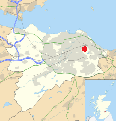

In the middle of Scottish Capital stretches Royal Park and Hill. The greenish rocks beautifully harmonize with city style.
The Arthur's Seat
An 832 feet high hill right in the middle of Edinburgh.
Arthur's Seat is an extinct volcano which is the main peak
of the group of hills in Edinburgh, Scotland, which form most of Holyrood Park.
It is situated just to the east of the city centre, about 1 mile (1.6 km)
to the east of Edinburgh Castle. The hill rises above the city to a height of 250.5 m (822 ft),
provides excellent panoramic views of the city and beyond,
is relatively easy to climb, and is popular for hillwalking.
Though it can be climbed from almost any direction, the easiest
and simplest ascent is from the east, where a grassy slope rises above Dunsapie Loch.
At a spur of the hill, Salisbury Crags has historically been a rock
climbing venue with routes of various degrees of difficulty, but due to hazards,
rock climbing is now restricted to the South Quarry and a permit is required.
St. Anthony's Chapel
The acient remains of an old chapel gives the place magic flavour.
The origin and the history of the chapel are obscure,
but it was certainly built no later than the early 15th century,
as in 1426 it is recorded that the Pope gave money for its repair.
The chapel may have been linked to the Preceptory of St. Anthony,
a skin hospice, which was based in Leith around this time.
It may have been linked to the nearby Holyrood Abbey.
St Margaret's Loch
St Margaret's Loch is a shallow man-made loch to the south of Queen's Drive.
It is around 500 m east of Holyrood Palace, and about 100 m north of the ruin
of St Anthony's Chapel. Once a boggy marshland, the loch was formed in 1856
as part of Prince Albert's improvement plans for the area surrounding the palace.
The loch has been used as a boating pond but is now home to a strong population
of ducks, geese, and swans.
The Holyrood Park
Also called the Queen's Park.
Holyrood Park (also called the Queen's Park or King's Park
depending on the reigning monarch's gender) is a royal
park in central Edinburgh, Scotland about 1 mile
(1.6 kilometres) to the east of Edinburgh Castle.
It is open to the public. It has an array of hills,
lochs, glens, ridges, basalt cliffs, and patches of
gorse, providing a wild piece of highland landscape
within its 650-acre (260 ha) area. The park is associated
with the royal palace of Holyroodhouse and was formerly
a 12th-century royal hunting estate. The park was created
in 1541 when James V had the ground "circulit about Arthurs
Sett, Salisborie and Duddingston craggis" enclosed by a
stone wall.
The Hill that plays important part of the city landscape

Arthur's Seat, an extinct volcano and the highest point in Edinburgh,
is at the centre of the park, with the cliffs of Salisbury Crags to the west.
There are three lochs; St Margaret's Loch, Dunsapie Loch, and Duddingston Loch.
The ruined St Anthony's Chapel stands above St Margaret's Loch.
Queen's Drive is the main route through the Park, and is partly closed on Sundays to motor vehicles.
St Margaret's Well and St Anthony's Well are both natural springs within the park.
Holyrood Park is located to the south-east of the Old Town, at the edge of the city centre.
Abbeyhill is to the north, and Duddingston village to the east.
The University of Edinburgh's Pollock Halls of Residence are to the south-west,
and Dumbiedykes is to the west.
Holyrood Park is one of Scotland's Properties in Care,
owned by Scottish Ministers and managed on their behalf by Historic Environment Scotland.
Truly Royal inheritance
It is sometimes said that its name is derived from legends pertaining
to King Arthur, such as the reference in Y Gododdin. Some support for
this may be provided by several other hilltop and mountaintop features
in Britain which bear the same or similar names, such as the peak of Ben
Arthur (The Cobbler) in the western highlands, sometimes known as Arthur's Seat,
and Arthur's Chair on the ridge called Stone Arthur in the English Lake District.
There is no traditional Scottish Gaelic name for Arthur's Seat in Edinburgh,
but William Maitland proposed that the name was a corruption of Àrd-na-Said,
implying the "Height of Arrows", which over the years became Arthur's Seat
(perhaps via "Archer's Seat"). Alternatively, John Milne's proposed etymology
of Àrd-thir Suidhe meaning "place on high ground" uncomfortably
requires the transposition of the name elements.